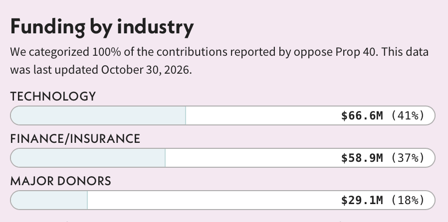

CalMatters (Voter Guide; Politics; Show Your Work)
money in politics
categorized industries that spent $900mn in CA's 2026 election cycle (built a ML classifier; debated what an industry is).
featured in 14 pages of CalMatter's 2026 Voter Guide; enabled political reporting; methodology published by CalMatters.